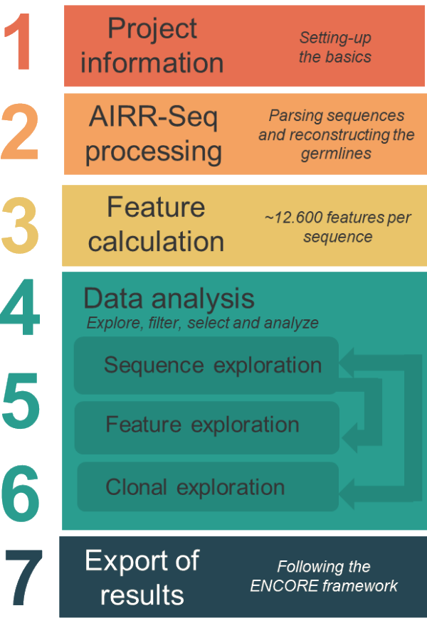
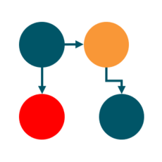

An interactive and scalable Shiny application for analyzing sequence features of B-cell and T-cell receptor repertoires.
AbSolution supports identification and visualization of variable region characteristics, clonotypes, and mutation patterns from immunoglobulin and TCR sequence data. It has been designed under the principles of accessibility, scalability, flexibility, interactivity, and reproducibility.
Features
- AIRR-Seq parsing: import and parse AIRR-formatted sequence data with automatic germline reconstruction
- Sequence feature extraction: nucleotide/amino acid properties, mutation analysis, physicochemical descriptors (Kidera factors, Atchley factors, etc.)
- Scalable computation: backed by file-backed big matrices (bigstatsr) for large repertoires
- Interactive visualization: PCA/UMAP projections, violin plots, clonal frequency distributions, UpSet plots for shared clones
- Differential analysis: variable selection between user-defined groups with univariate logistic regression
- Clonal exploration: multiple clonotype definitions, shared clone detection, dominance analysis
- Reproducible exports: ENCORE-formatted output bundles with code, data, Docker environment, and rendered reports
Installation
From CRAN - Recommended
if (!requireNamespace("AbSolution", quietly = TRUE))
install.packages("AbSolution")From GitHub
# Install Bioconductor dependencies first
if (!requireNamespace("BiocManager", quietly = TRUE))
install.packages("BiocManager")
BiocManager::install(c("Biostrings", "IRanges", "pwalign"))
# Install AbSolution
if (!requireNamespace("remotes", quietly = TRUE))
install.packages("remotes")
remotes::install_github("EDS-Bioinformatics-Laboratory/AbSolution")From source
install.packages("AbSolution_1.0.0.tar.gz", repos = NULL, type = "source")From a shared exported proyect
Docker image
A Docker setup is available in the 0_SoftwareEnvironment/R/ directory of the exported project:
renv file
A renv.lock file is available in the 0_SoftwareEnvironment/R/ directory of the exported project:
renv::restore(lockfile = "0_SoftwareEnvironment/R/renv.lock")Install AbSolution exported source file
install.packages("0_SoftwareEnvironment/R/AbSolution_1.0.0.tar.gz", repos = NULL, type = "source")Quick start
This launches the Shiny application. A built-in test dataset is available to explore all features without needing your own data.
For a complete guide, see the package vignette:
vignette("AbSolution")Workflow overview

AbSolution guides you through a step-by-step analysis:
- Project information — define your samples, groups, and metadata
- AIRR-Seq conversion — parse sequences and reconstruct germlines
- Feature calculation — calculate sequence-based features for each sequence
- Dataset exploration — filter variables, compare groups, explore PCA/UMAP projections
- Feature exploration — examine individual sequence features across groups
- Clonal exploration — analyze clonotype distributions, shared clones, and dominance
- Export — generate reproducible reports in ENCORE format
Input format
AbSolution accepts AIRR-Seq formatted TSV files as produced by tools such as IMGT/HighV-QUEST, IgBLAST, MiXCR, or 10x Genomics Cell Ranger.
Contributing
Contributions are welcome. Please open an issue to report bugs or suggest features, or submit a pull request.
Acknowledgments
Developed at the Bioinformatics Laboratory, Department of Epidemiology and Data Science, Amsterdam UMC, University of Amsterdam, the Netherlands.
